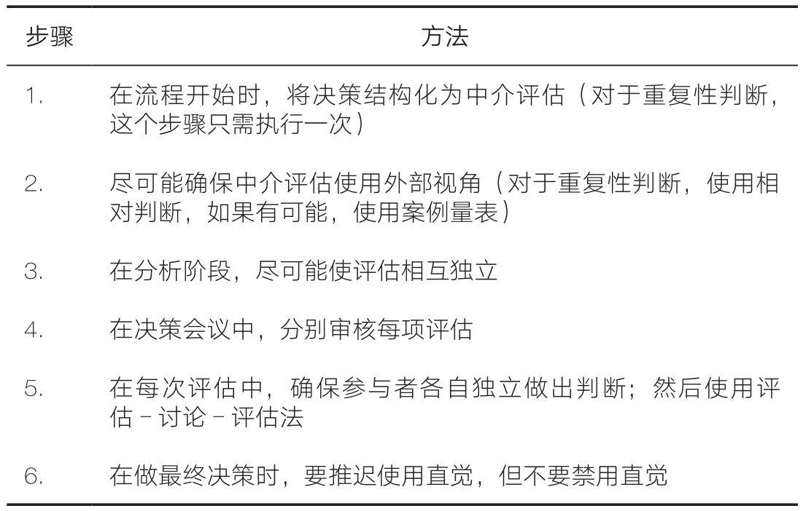

不久前，我们两个人（卡尼曼和西博尼）与我们的朋友丹·罗瓦洛（Dan Lovallo）一起，介绍过组织中使用的一种决策方法。这一方法的首要目的在于减少噪声，我们称之为中介评估法。该方法涵盖了我们前几章所介绍的大多数决策卫生策略，并且它的应用范围很广泛，只要在计划或选项的评估过程中需要考虑和权衡多维度信息，我们就可以使用该方法。该方法能够以多种形式广泛应用于所有类型的组织中，包括不同的公司、医院、大学和政府机构等。
我们在这里用一个虚构的例子来说明这个方法，这个例子是根据几个真实案例改编而成的。我们虚构了一家名叫迈普科（Mapco）的公司，我们将跟随该公司的脚步，一起来研究一个重大的、具有变革性意义的企业收购项目。我们将重点介绍迈普科公司所采取的步骤与其他公司在类似情况下所采取的常规步骤有何不同。你将看到，两者的确有实质性差异，但这种差异很微妙，稍不留神就可能注意不到。
收购竞争对手罗德科（Roadco）公司的想法由来已久，目前时机已经成熟，因此迈普科公司的领导人拟召开一次董事会议来讨论这一问题。迈普科的CEO琼·莫里森（Joan Morrison）召开了一次董事会战略委员会会议，初步讨论这次可能的收购案以及应采取哪些措施来改进董事会的收购决议。会议一开始，莫里森就提出了一个让委员们大吃一惊的建议：
我想提议董事会尝试一种新的决议流程来讨论罗德科收购案，新流程的名字不那么有魅力，它叫中介评估法，但其观点非常简单。它的灵感来自战略方案评估和求职者评估之间有相似性。
有研究表明结构化面试比非结构化面试效果更好，这一点你们想必已经很熟悉了，那么同理，让招聘决策结构化也可以改善决策品质。你们也都知道，我们的人力资源部在招聘决策中采用了这些原则。大量研究表明：结构化面试具有更高的准确性——这是我们过去使用的非结构化面试无法企及的。
我发现，对不同候选人的评价和在重大决策中对不同选项的评价有着明显的相似之处——不同的选项就像不同的候选人一样。这种相似性使我联想到，我们应该把评估候选人的那套方法应用于我们的工作中，也就是用在评估战略方案上。
委员会其他成员起初对这个类比感到困惑。他们争辩道：“原有的招聘流程就像是一台运转良好的机器，可以做出无数类似的决策，而且不会面临巨大的时间压力。相反，进行战略决策需要开展大量独特的工作，而且决策过程必须及时。一些委员向莫里森明确表示，他们将反对任何会导致决策延迟的提议，此外，他们还担心新的决议流程将给迈普科的研究人员增加不少职责内的负担。
莫里森对这些反对意见进行了直接回应。她向同事们保证：“结构化的流程不会拖延决策，它仅仅是为董事会讨论这项交易制定一个议程而已。”她进一步解释道：“我们应事先确定一个清单，定好从哪些方面对此次交易进行评估，就像面试官会列出岗位需求清单、确定候选人需要具备的特质或属性一样。我们将确保董事会对需要评估的各个方面进行逐一、独立的讨论，就像结构化面试中面试官们对候选人的不同维度依次进行评估一样。只有在这之后，我们才能开始讨论是接受还是拒绝这项交易。这一流程将更有效地发挥董事会的集体智慧。
“当然，如果我们同意这种方法，这将对信息的呈现方式以及交易团队如何准备会议产生影响。因此，我现在想听听你们的想法。”
一位仍有疑问的委员问莫里森，这种结构化究竟给招聘决策的品质带来了什么好处，为什么她相信战略决策也能获得这样的好处。为了引导他理解其中的逻辑，莫里森解释道：“中介评估法能够将信息的价值最大化，因为它确保了各个维度在评估时是相互独立的。我们通常进行的董事会讨论看起来很像非结构化面试。我们总想着去达成最终的目标——做出决策，并根据该目标处理所有信息。我们从一开始就在想要如何做个了结，并且会尽可能快地达成目标。就像招聘人员在非结构化面试中的表现那样，我们有可能只是在用讨论来确认第一印象而已。使用结构化的方法将迫使我们等到完成所有评估之后再考虑达成决策这一目标。我们将独立的评估作为中程目标，这样一来，就能考虑到所有可用的信息，并确保我们对交易的某一方面得出的结论不会改变我们对交易的其他方面的解读。”
委员们同意试用这种方法，但是他们问道：“中介评估要评估什么呢？莫里森心中有没有预先定义好的列表？”“没有，”莫里森回答道，“如果我们用此方案来解决常规决策，那可能会有，但在当前这种情况下，我们需要自己定义中介评估的内容。这一点非常重要：我们需要自己来决定收购案的哪些重要方面需要评估。”战略委员会同意第二天再开会来完成这个任务。
莫里森继续说道：“我们要做的第一件事就是起草一份有关这项交易的完整独立评估清单。这些评估将由杰夫·施耐德（Jeff Schneider）的研究团队完成。我们今天的任务是编写评估清单。评估清单应该是全面的，也就是说，你能够想到的任何与交易有关的事，都应该列入其中，并且它应该至少会影响清单中的一项评估内容。我所说的‘独立’是指相关事实最好只影响清单中的一项评估内容，尽量减少重复的情况。”
于是，整个团队开始忙碌起来，他们列出了一长串看起来与交易有关的事实和资料，然后把这些内容编排成一个评估项清单。参与者很快发现，难点在于如何让清单既简短又全面，且不同的评估项之间不会相互重叠，但这项任务依然是可以应付的。确实如此，团队最终列出的清单所包含的7项评估，与董事会期待在收购提案报告中看到的内容目录看起来很相似。除预期财务模型外，该清单还包括对目标公司管理团队的表现进行评估，对可能获得的协同效应进行评估等。
一些委员对会议未能就罗德科收购案产生新颖的见解而感到失望，莫里森解释说，那不是会议的目标，目前的目标是向负责研究此次收购的交易团队介绍情况。她说，每项评估都是交易团队报告中不同章节的主题，董事会将分别对其进行讨论。
在莫里森看来，交易团队的任务不是告诉董事会他们对交易的整体看法——至少现在还不是时候，而是对每项中介评估提供客观、独立的评价。莫里森解释道：“最终，交易团队报告中的每一章都应该以一个评分结尾，这个评分能够回答‘抛开最终决策中应给予这个主题的权重不谈，这项评估的证据在多大程度上支持或反对该交易’这个问题。”
负责评估交易的团队负责人杰夫·施耐德当天下午召集了团队，并开展工作。与团队通常的工作方式相比，这次的变动不大，但他强调了这些变动的重要性。
施耐德解释道：“团队的分析师应该尽可能客观地做出分析。毫无疑问，评估应该建立在事实的基础上，但他们也应该尽可能使用外部视角。”然而，团队成员并不确定他所谓的“外部视角”是什么意思，因此施耐德举了两个例子，用到了莫里森确认过的两个中介评估项。他说，要评估这项交易获得监管部门批准的可能性，他们首先需要找出基准概率，即那些与本次交易有可比性的其他交易最终获得批准的百分比。这项任务反过来要求他们定义一个与本次交易相关的参考类别，即一组被认为与本次交易具有足够可比性的交易。
施耐德接着解释了如何对目标公司产品研发部门的技术能力进行评估——这是莫里森列出的另一个重要评估。“仅仅以事实为基础来描述公司最近的成绩是‘好’或‘非常好’是不够的。我期待做出这样的判断：从最近的产品发布记录来看，这个产品研发部门在同类公司中处于前40%的位置。”他解释道，“总之，我们的目标是使评估尽可能有可比性，因为基于相对判断要比基于绝对判断好。”
施耐德还有一个要求，他说：“按照莫里森的指示，为降低评估之间相互影响的风险，评估应尽可能相互独立。”因此，他为不同的评估分配了不同的分析师，并要求他们独立工作。
一些分析师对此表示惊讶，反问道：“团队合作不是更好吗？如果你不想让我们交流，组建团队有什么意义？”
施耐德意识到，他需要解释为什么独立性是必须的。“你可能知道招聘中的光环效应，”他说，“当你对候选人的总体印象影响到你对他在某一特定维度上的技能评估时，就发生了光环效应。这是我们想避免的。”但一些分析师似乎认为光环效应不是一个很严重的问题，因此施耐德用了另一个比喻：“如果有4名犯罪目击者，你会让他们在作证前互相交谈吗？显然不会！你不想让证人之间彼此影响。”尽管分析师们没有觉得这种类比让他们茅塞顿开，但施耐德想，这起码传递了信息。
然而，施耐德没有足够的分析师来完成完全独立的评估。简是团队中经验丰富的成员，负责了两项评估。施耐德尽可能给她选择了完全不同的两项评估，他要求简在完成第一项评估并准备好报告之后再开始另一项。另一个问题是对管理团队品质的评估，施耐德担心，分析师们很难将对管理团队内在品质的评估与对公司近期业绩的判断区分开来（团队当然会对这些业绩进行详细研究）。为了解决这个问题，施耐德外聘了一位人力资源专家就管理团队的表现发表看法。他想，这样一来就能获得更独立的意见。
交易团队发现，施耐德还有一个指示和以往不同：交易报告的每一章应聚焦一项评估，根据莫里森的要求，还要以评分的形式给出自己的结论。不过，施耐德也补充道，分析师们应该在每一章中都包含有关评估的所有事实性信息。“不要隐瞒任何事情，”他要求他们，“章节的总体基调必须与给出的评分保持一致，但如果有些信息与评分不一致甚至互相矛盾，也不要隐瞒。你的工作不是推销你的建议，而是代表客观事实。如果事情很复杂，那就接受吧——事情通常就是复杂的。”
本着这样的精神，施耐德鼓励分析师不要隐瞒自己对每项评估的信心。“董事会知道你没有完善的信息。如果你告诉他们，你真的毫无把握，这会对他们有帮助。如果你遇到了真正让你踌躇的事情，比如有可能会破坏这项交易的因素，你当然应该立即报告。”
交易团队按照指示开展工作。幸好，没有发现重大的破坏交易的因素。交易团队为莫里森和董事会编写了一份报告，涵盖了清单所列的所有评估。
为决策会议做准备时，莫里森阅读了交易团队的报告，她立刻注意到了一些重要的事情：虽然大多数评估都支持这项交易，但它们并没有绘制出一幅简单、乐观、全面的蓝图。一些评估非常支持这项交易，另一些则不然。她知道，这些差异是保持评估相互独立后的必然结果。当过度一致性受到控制时，现实并不会像大多数董事会报告所呈现的那样具有一致性。“很好，”莫里森想，“不同评估之间的矛盾之处将引发问题和讨论，这正是我们需要在董事会上好好讨论的。当然，多样化的结果不会让决策变得更容易，但它会让决策变得更好。”
莫里森召开了一次董事会会议，目的是审查这份报告并做出收购决议。她向董事会成员解释了交易团队所用的分析方法，并要求董事会成员也遵循同样的原则。她说：“施耐德和他的团队一直努力使各项评估相互独立，我们现在也要独立地审查各项评估。这意味着我们将分别审查每一项评估，之后再讨论最终的决定。我们要把每一项评估视为一个独立的项目议程。”
董事会成员明白，遵循这种结构化的方法是有困难的。莫里森要求他们在讨论完所有评估之前不要对交易形成整体看法。但他们中许多人都是业内人士，对罗德科公司有自己的看法，不讨论这种整体看法感觉有点儿不自然。但他们知道莫里森想要什么，所以他们同意按她的规则行事，暂时不讨论自己的总体观点。
令他们惊讶的是，董事会成员发现这种做法非常有价值。在会议期间，他们中的一些人甚至改变了对这项交易的原有看法（尽管没有人知道，因为他们没有公开自己的观点）。莫里森主持会议的方式在很大程度上起了作用：她采用了评估-讨论-评估法，这种方法综合了深思熟虑和各种独立意见的优点。
莫里森是这样做的：在每次评估中，施耐德代表交易团队简要总结关键事实（董事会成员事先已经详细阅读了这些材料），然后，莫里森要求董事会成员在手机投票程序上对每项评估给出自己的评分。该评分与交易团队提议的评分可能相同，也可能不同。评分的分布情况会立即在屏幕上显示出来，但不显示评分者是谁。“这不是投票，”莫里森解释说，“我们只是想了解大家对每个话题的看法。”在讨论之前获得每个董事会成员的独立意见，这样做减少了社交影响和信息级联的危险。
董事会成员很快就某些评估项中达成了共识，但在讨论另一些评估项的过程中出现了观点分歧。自然，莫里森引导大家花更多的时间讨论有分歧的项目。她要确保产生分歧的董事会成员们都发言，她鼓励他们用事实和论据表达自己的观点，但也要保持谦逊、接纳差异。有一次，当一位董事会成员在讨论中情绪激动、忘乎所以时，她提醒道：“我们都是理智的人，但我们还是会有分歧，这说明这本身就是一个连理智的人之间都会产生分歧的话题。”
当一项评估的讨论接近尾声时，莫里森要求董事会成员再次就评分进行投票。在大多数情况下，这一次投票结果比第一轮投票更一致。每一项评估都重复进行这样的流程——第一次评估、讨论、第二次评估。
最后，到了要对这项交易下结论的时候。为了便于讨论，施耐德在白板上写下了每项评估的列表，每项评估都有董事会给出的平均得分。面对这项交易的概况，董事会成员们应该如何决策？
一位董事会成员提出了一个简单的办法：直接使用平均分。也许他知道，正如我们在第9章所讨论的那样，机械性汇总比总体性的诊断性判断更优。但另一位成员立即反对，在他看来，对一些评估项赋予的权重应该远高于其他评估项。第三位成员则建议采用不同层次的评估。
莫里森打断了大家的讨论。“这不仅仅是简单地计算出各项评估分数的总分，”她说，“我们之前并没有靠直觉行事，但现在是时候运用它了。我们现在需要的是你们的判断。”
莫里森没有解释她的逻辑，她曾以惨痛的代价领悟到这个教训。她知道，尤其是在做重要决策时，人们会拒绝那些让他们束手束脚、禁锢他们判断的规则。她见识过当人们知道要用某个公式做决策时，他们是如何钻系统的漏洞的。他们会改变评分以得出期望的结论——这与整个工作的目的是相悖的。此外，尽管当下的情况并非如此，但她仍然担心，可能会出现一些在评估列表中未被包括但可能起到决定性作用的因素（如第10章讨论的断腿因素）。如果出现此类破坏交易或促进交易的意外因素，那么基于评估平均值的纯机械性的决策过程可能会导致严重错误。
莫里森也知道，让董事会成员在这个阶段运用他们的直觉与让他们在一开始就运用直觉是非常不同的。既然这些评估就在案头，且所有人都知道这些评估，那么最终决策肯定会稳妥地基于这些以事实为依据、被全面讨论过的评分。当董事会成员盯着一份倾向于支持交易的中介评估清单时，如果有人要反对这项交易，他就需要拿出强有力的证据才行。按照这个逻辑，董事会对这项交易进行了讨论，并采用了与所有董事会大致相同的方式进行表决。
我们在一次性、单一决策的情境中介绍了中介评估法，实际上这个流程也适用于重复决策。想象一下，如果不是迈普科公司正面临一项收购案，而是它本身是一家风险投资基金，需要不断地对初创企业进行投资，那么，此方法同样适用，流程也大同小异，只有两个地方不太一样，这两个地方会使流程变得更简单。
首先，初始步骤，即确定中介评估清单只需做一次。基金有投资标准，适用于所有预投资项目——这些就是评估清单中的内容，没有必要每次都重新进行设计。
其次，如果该基金做许多同类型的决策，它可以利用自己的经验来校准自己的判断。例如，每个基金公司都需要做的一项评估是评估管理团队的表现。我们建议这类评估应该基于一个参考群体来进行。也许你同情迈普科的分析师，因为除了评估一个特定的目标之外，他们还要收集具有可比性的其他公司的数据，而这确实是一项挑战。
在重复性决策中，比较判断变得容易得多。如果你已经评估了数十家甚至数百家公司的管理团队，那么你可以将这些公司作为参考群体。一个很实用的方法是：创建一个由锚定案例所定义的案例量表。例如，你可能会说，目标管理团队与我们收购的“ABC公司”的管理团队一样好，但不如“DEF公司”的管理团队好。当然，所有参与者都必须了解锚定案例并定期更新。定义锚定案例需要在前期投入一定的时间，这种方法的价值在于，比较判断（将该团队与ABC公司和DEF公司的团队进行比较）相比于由数字或形容词定义的绝对评分更可靠。
为了便于参考，我们在表25-1中总结了中介评估法所做出的主要改变。
表25-1 中介评估法做出改变的主要步骤
到这里，你可能已经辨认出了我们在前几章中介绍的几种决策卫生技术：对信息进行排序；将决策过程结构化并进行独立评估；使用基于外部视角的共同参考框架；汇总多个独立判断。中介评估法旨在改变决策过程，通过应用这些技术尽可能多地引入决策卫生策略。
毫无疑问，这种强调过程而不是强调决策内容的做法可能会引起一些人的质疑和不满，我们前面所描述的研究团队成员和董事会成员的那些反应并不罕见。内容是具体的，而流程是通用的，运用直觉和判断往往生动有趣，遵循流程则显得沉闷乏味。传统观点认为，好的决策来自伟大领袖的洞察力和创造力，当我们是领导者时，我们尤其愿意相信这一点。而对于许多人来说，流程这个词常常意味着官僚主义、繁文缛节和拖延。
那些全面或部分实施了中介评估法的公司和政府机构的经验表明，这些担忧具有误导性。虽然让已经官僚化了的组织的决策过程复杂化并不能让事情变得更好，但是，决策卫生策略不会花更多的时间，当然也不需要官僚化。相反，它促使人们展开辩论和向权威提出挑战，而不是延续官僚机构那令人窒息的达成共识的一贯方式。
采用决策卫生策略的理由很简单。商界和公共部门的领导者们往往完全意识不到他们最大或最重要的决策中存在的噪声，因而也不会采取具体措施来减少噪声。在这方面，他们就像招聘人员继续依赖非结构化面试作为人才选拔的唯一手段那样，都忽视了自身判断中的噪声，过度信任这一方法的有效性，并且对改进它的步骤一无所知。
就像洗手并不能预防所有的疾病一样，决策卫生也不能防止所有的错误，也就是说，它不会使每一个决策都很明智。但就像洗手一样，决策卫生警示人们关注一个虽看不见却普遍存在且具有破坏性的问题——哪里有判断，哪里就有噪声。因此，我们建议将决策卫生作为减少噪声的工具。